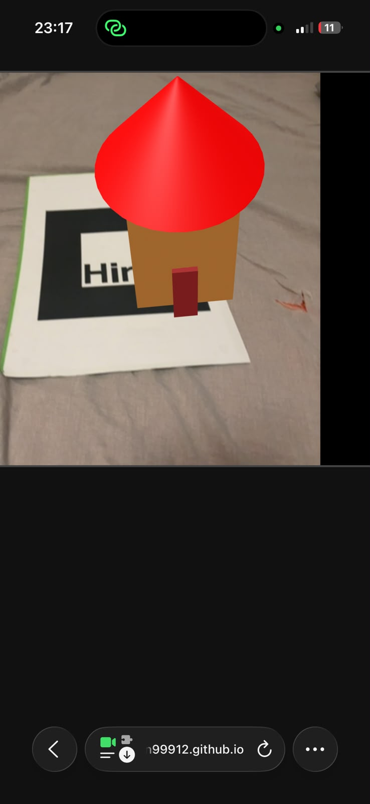
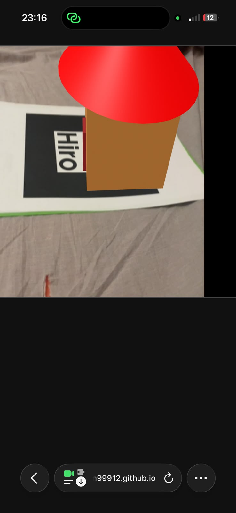

En esta página iré incorporando las evidencias de las tareas del bloque de realidad aumentada.
En esta tarea he creado un objeto 3D utilizando varias primitivas de A-Frame. Primero he construido el modelo en una escena 3D normal para ajustar las posiciones y tamaños de cada pieza. Despues he llevado el modelo a una experiencia de realidad aumentada usando el marcador Hiro para comprobar que se mostraba correctamente sobre la camara.

